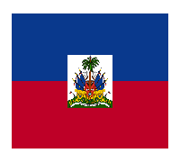

About Me
My name is Wiselinda Zidor, I was born in Haiti. I currently live in Turkey where I am learning graphic design, but I am also learning software development at BYU idaho. In Turkey I live with my cats and friends spending time on my future projects it's my hobby..
About My Country

Haiti is a small island located in Central America, which shares its island with the Dominican Republic, its capital is Port-au-Prince and has 11.54 million inhabitants. It is true that it is a poor country with a lot of political crisis and other problems, but it is one of the most beautiful countries in the world with lots of natural wealth and exceptional cuisine..